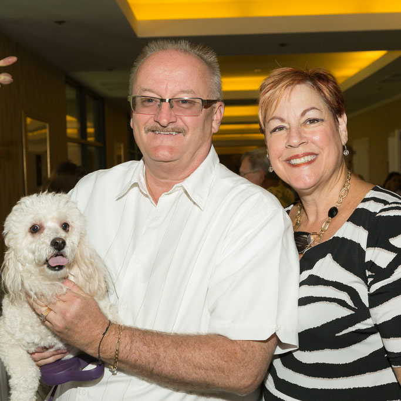
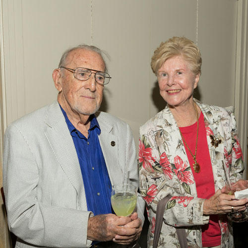

Commemorative Website
About the Event

Pets on Parade or POP is an annual fundraising event co-hosted by Pegasus Therapeutic Riding and the Humane Society of the Desert. POP is held in July each year — typically its very hot — but the event has grown over the years and in 2014 had approximately 500 guests PLUS all sorts of furry 4-legged friends. It's one of the only events that you can bring your pet to and they will enjot it as much as you.
POP Through the Years
2014 marks the 17th anniversary of Pets on Parade. Pegasus' President and Chairwoman, Lori Sarner created the event in 1997. As the story goes ... 17 years ago Lori woke up from a dream about beautiful magazine with all kinds of animal pictures. Lori always wanted to do a horses calendar with the Pegasus horses but it never got off the ground. She was also pondering why there were no summer events in Palm Springs. Surely there were people here...and she thought they might be animal lovers. So she tossed it around and came up with the idea of Pets On Parade ... a magazine with pet photos submitted by the public as "ads" for a charitable donation. Pegasus would partner with another charity, an animal charity, to have judges pick the best photo in each category. So in March 1997, Lori phoned Robin Montgomery at 7:00 am (Lori's customary best time for creating!) and told her about the idea ... then she said "Lets do it this year!" Robin said "OK" and they were off. Robin made a concept of what the first magazine would look like. That first event was held at Le Vallerius in Palm Springs with about 100 attendees the POP magazine had about 70 pages. The next year at Le Vallarius, there were 250 attendees (they were hanging out the windows) and the magazine went to 150 pages. Each year has brought more supporters and Palm Springs Life as a sponosr for the Pet Photo Contest with one lucky pet landing on the August cover of PSL. And so it goes...
Honoree
Circle of Life Award Receipient
Lindi Biggi
Loving All Animals
Lindi's accomplishments are many ... to name a few:
- 33-year advocate of chipping animal companions.
- Spearheaded bringing 27 dogs from Katrina; one animal was chipped and reunited with his owner.
- Prior to the Indio shelter closing, Lindi organized a group to find homes for 137 animals in the shelter; all found a new home.
- Organized Mobile Vet Van to go to Duroville to spay, neuter and chip all pets and strays at no cost; strays were placed in foster care or new homes.
- Continually holds NO COST spay, neuter and chip events
- Adoption limo goes out every other week to shelters with people looking for pets
Lindi's Dream ... "A No Kill Coachella Valley" ...
Photos from the Event
Melinda Bustos & Cindy Williams
Bianca Rae, Anchor Reporter for KESQ and CBS with adopted puppy.
Alex & Alicia Gomez with Brewster!
- 
Michael & Kathleen Potts with Libby!

Lindi Biggi with her 4-legged friend!
Winner of Palm Springs Life Cutest Pet Contest Roxie Davenport, an adopted Greyhound.
Robin Montgomery and Lindi Biggi
POP Fun & Kicks!
Dan McGrath,

Lindi Biggi having fun with friends.

Mom & Daughter
Tricia and Karl Gehrlein
Pegasus ' High School Honor Students committed to community service.
- 
Morris Diamond and Alice Harnell
Lori Sarner, Creator of POP introducing her dog Bozo.
Melinda Bustos, Robin Montgomery, Albeth Paris Grass
Ernie Ruben with Snickers and Suffy, who were married last year.
Rene Perla, Lori Sarner with her dog Bozo, & Pamela Moffitt Green
Carole Krechman

Mayor Pro Tem of Rancho Mirage Dana Hobart
Click Here for More POP 2014 Photos from Mark Davidson Photography
Event Committee & Donors
Creator
Lori Sarner
Event Chairs
Malinda Bustos, Pamela Moffitt Green,
Robin Montgomery
Auction Chair
Albeth Paris Grass
Awards Chairs
Gloria Nelson, Rene Perla
Raffle Chair
Kathy Hart
Adoption Chair
Jennifer Hamilton
Sales Chair
Linda Norman Thomas
Video Production Chairs
Leanna Bonamici, Larry & Mike Pederson,
Robin Montgomery
Print Production & PowerPoint
Gloria Nelson, Rene Perla
Design & Printing
Chad Bustos
Tablescapes
Pamela Moffitt Green, Steve Kotalik
Event Committee
Lisa Brady, Mimi Flint, Curtiss Perry, Alicia & Alex Gomez, Kathleen & Michael Potts, Deanna Fintz, Eileen T. Riley, Ellie Weiner, Linda Blake, Terry Runyon, Jennifer Hamilton, Lori Carman, Anthony Carman, Jennette Rodriguez, Linda Gorman, Melissa Pryor, Lisa Saul, Nancy Javitch, and Rene Perla
Thank You Palm Springs Life Magazine for Sensational Graphics in the Program:
Lisa Laddusaw, Emma Reyna and Lorinda Urrutia
Thank You Major Donors
- Bonnie and Kurt Campbell — Underwriting Press and Special Guest Meals
- Catherine A. Eklund Mares — Entertainment
- Northern Trust
- Bighorn Institute
- James R. Houston
- Dick Shalhoub
- Penny Carpenter
- Eileen T. Riley
- CV Studios Entertainment
Other Donors
Lori Sarner, Linda Cuhney, Mark Davidson, Kay Bell, Joan Harrison, Christa Kschischang, Ann C. Lindberg, Cynthia Parker, Albeth & Clancy Grass, Peter Solomon, Marilyn Hardie, Vicki A. Martens, Steve Kotalik, Janice and Carl K. Osborne, Steve Pecoraro & Mikel Montoya, Linda Reid, Claire Sharp, Maria Simmsgeiger, Melissa Zielinski, Kathy Hart, Gloria Nelson, Morris I. Diamond, Stacy Jacob, Dee Wambaugh, Dr. Terre York, Howard Silverman, and Linda Blake
Pets on Parade 2014 was dedicated to the memory of
Mike Deveso — "Stargazer"
Contact Us